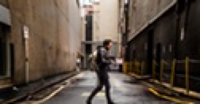
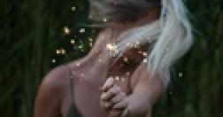

О нас
Информационно-аналитический веб-сайт, который анализирует основные события в Украине и в мире. Профессиональная команда штатных журналистов и привлеченных экспертов, скорость подачи материалов, их актуальность и беспристрастность – это те качества проекта, которые ему гарантируют успех. С момента запуска проекта сентября 2016 года, проект уже имеет 38 000 постоянных подписчиков на пуш уведомления.
Главный принцип нашей работы – абсолютная независимость, беспристрастность, подача только проверенной информации из первоисточников. Мы не поддерживаем интересов ни одной партии, корпорации, исключаем возможность пропаганды и манипуляции мнением читателя. Мы ориентируемся на лучшие стандарты мировой информационной и деловой журналистики.
Веб-сайты являются Интернет-СМИ и действуют в соответствии с действующим законодательством Украины. В составе «РБК-Украина» работает Информационное агентство «РБК-Украина».
Редакторы: Светлана Шереметьева (шеф-редактор), Ульяна Кондратенко (главный редактор), Сергей Харченко (заместитель главного редактора), Елена Панченко (выпускающий редактор)
Корреспонденты: Владислав Кудрик, Юлия Забелина, Артур Гор
Выпускающие редакторы: Мария Макарова, Ярослав Жаренов, Игорь Кудрявцев, Сергей Прилуцкий, Екатерина Собкова, Дмитрий Кривошеев, Дмитрий Нетета, Виктор Авдеенкр, Алексей Здебский
Рерайтеры: Ирина Скрипка
Отдел рекламы: Инна Ракоид
Последние статьи
-
Стартапер, который чуть не убил Хусейна
4 февраля 2017, 12:10 -

Зачем украинским молочникам иностранная прописка
4 февраля 2017, 12:10 -

Зачем украинским молочникам иностранная прописка
4 февраля 2017, 12:10